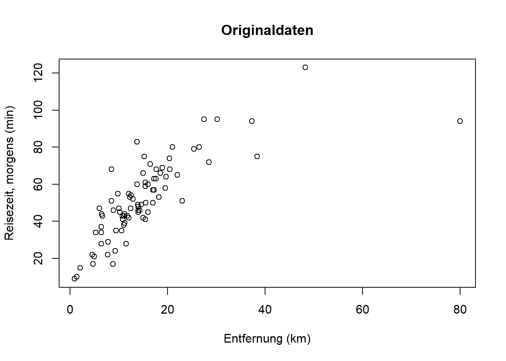
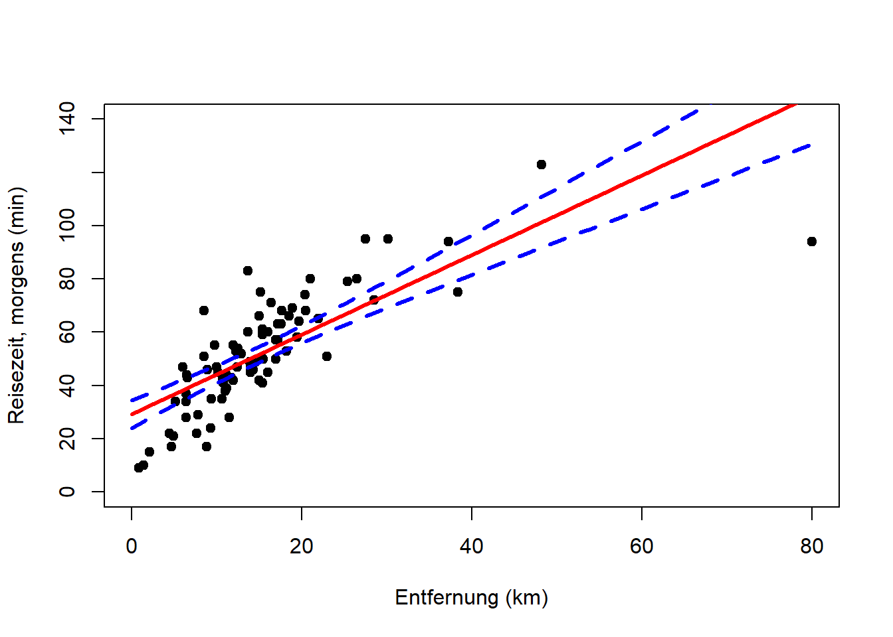
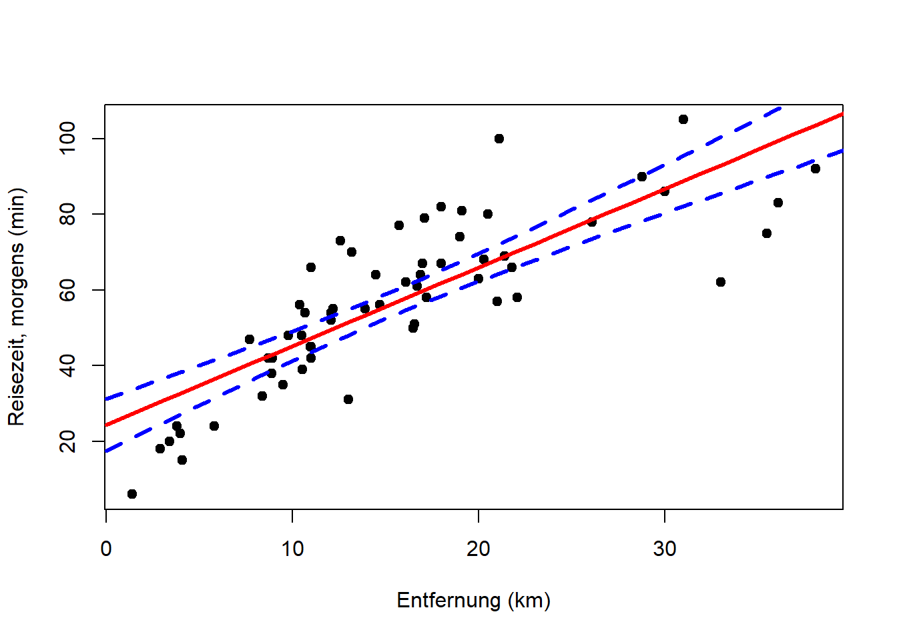
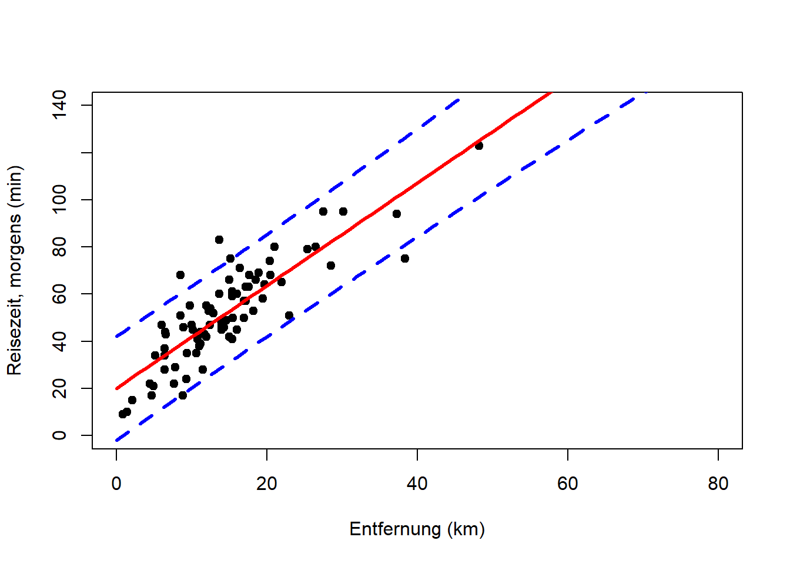

Kapitel 10 Lineare Regression
Für die lineare Regression kehren wir zu einer Frage aus Kapitel 5 zurück: Kann man Ihre Anreisezeit nach Adlershof mit der Entfernung zu Ihrem Wohnort statistisch vorhersagen?
plot(reisedat$distanz, reisedat$zeit_morgens,
xlab = "Entfernung (km)", ylab = "Reisezeit, morgens (min)")
points(reisedat$distanz[13], reisedat$zeit_morgens[13], col = "red")
points(reisedat$distanz[c(30,37,63,71)], reisedat$zeit_morgens[c(30,37,63,71)], col = "blue")
Ich erstelle zwei neue Versionen der Daten, wo ich einmal den fraglichen Datenpunkt \((14.8, 1.2)\) (oben in rot) und einmal zusätzlich die vier Punkte ganz rechts (oben in blau) rausnehme. Bei ersterem vermute ich eine falsche Dateneingabe in Stunden (statt Minuten). Bei letzteren vermute ich eine Anreise mit dem Auto, die dann nicht unbedingt mit den anderen Datenpunkten für öffentliche Verkehrsmittel (und Fahrrad) zusammenpasst. Ich werde die drei Versionen der Daten dann vergleichen.
Wir erinnern uns, dass der Korrelationskoeffizient nach Bravais-Pearson aus Kapitel 5 0.82 war (für die Originaldaten). Das Ziel ist nun, eine Gerade durch die Punktwolke zu legen, die den Trend beschreibt, so dass der Abstand der Punkte von der Geraden minimal ist.
Es geht um 2 Variablen (Merkmale):
- die abhängige Variable \(y\) (im Bsp. Reisezeit)
- die unabhängige Variable \(x\) (im Bsp. Entfernung)
Die Variablen müssen metrisch skaliert sein.20 Wir wollen das generelle Verhalten von \(y\) mit \(x\) beschreiben. Eine Gerade stellt dabei das einfachste lineare Modell dar.
10.1 Definitionen
Im Falle einer einzigen unabhängigen Variable lautet die Gleichung des linearen Models:
\[\begin{equation} y_i = \beta_0 + \beta_1 \cdot x_i + \epsilon_i \quad \text{mit} \quad i=1,2,\ldots,n \tag{10.1} \end{equation}\]
\(y_i\) bezeichnet den Wert der abhängigen Variable für Datenpunkt \(i\), und \(x_i\) den Wert der unabhängigen Variable für Datenpunkt \(i\). Der Parameter \(\beta_0\) beschreibt den Achsenabschnitt der Geraden, also der Punkt, an dem die Gerade die y-Achse schneidet. Der Parameter \(\beta_1\) beschreibt die Steigung der Geraden. \(\epsilon_i\) stellt das Residuum (also den Fehler) für Datenpunkt \(i\) dar (Abbildung 10.1).

Abbildung 10.1: Lineare Regression: Definitionen.
10.2 Beschreibung vs. Vorhersage
Der primäre Zweck einer Regressionsanalyse ist die Beschreibung (oder Erklärung) der Daten im Sinne einer allgemeinen Beziehung, die sich auf die Grundgesamtheit übertragen lässt, aus der diese Daten entnommen wurden. Da diese Beziehung eine Eigenschaft der Grundgesamtheit ist, sollte sie auch Vorhersagen ermöglichen. Hierbei ist jedoch Vorsicht geboten. Betrachten Sie den Zusammenhang von Jahr und Weltrekordzeit für die in Abbildung 10.2 dargestellten Daten (Meile, Herren). Wenn, wie hier, die Zeit die unabhängige Variable ist, wird die Regression zu einer Form der Trendanalyse, die in diesem Fall eine Abnahme der Rekordzeit mit den Jahren anzeigt. (Die lm() Funktion und ihren Output werden wir weiter unten kennenlernen, hier geht es um die Grafiken.)
# Daten laden
mile <- read.csv("https://raw.githubusercontent.com/avehtari/ROS-Examples/master/Mile/data/mile.csv", header=TRUE)
# lineares Modell an Daten aus 1. Hälfte des 20. Jahrh. anpassen
mile_fit1 <- lm(seconds ~ year, data = mile[mile$year<1950,])
# Informationen zu Parameterschätzern extrahieren
coef(summary(mile_fit1))## Estimate Std. Error t value Pr(>|t|)
## (Intercept) 912.2340 67.90140 13.435 3.615e-08
## year -0.3439 0.03509 -9.798 9.059e-07# lineares Modell an kompletten Datensatz anpassen
mile_fit2 <- lm(seconds ~ year, data = mile)
coef(summary(mile_fit2))## Estimate Std. Error t value Pr(>|t|)
## (Intercept) 1006.876 21.532 46.76 1.361e-29
## year -0.393 0.011 -35.73 3.780e-26# Modellanpassung für 1. Hälfte des 20. Jahrh. plotten
plot(mile$year[mile$year<1950], mile$seconds[mile$year<1950],
xlim = c(1900, 2000), ylim = c(200, 260),
pch = 19, type = 'p',
xlab = "Jahr", ylab = "Weltrekord, Meile, Herren (Sekunden)")
abline(coef(mile_fit1), lwd = 3, col = "red")
# Extrapolation für 2. Hälfte des 20. Jahrh. plotten
plot(mile$year, mile$seconds,
xlim = c(1900, 2000), ylim = c(200, 260),
pch = 19, type = 'p',
xlab = "Jahr", ylab = "Weltrekord, Meile, Herren (Sekunden)")
abline(coef(mile_fit1), lwd = 3, col = "red")
# Modellanpassung für Gesamtdaten bis 2050 plotten
plot(mile$year, mile$seconds,
xlim = c(1900, 2050), ylim = c(200, 260),
pch = 19, type = 'p',
xlab = "Jahr", ylab = "Weltrekord, Meile, Herren (Sekunden)")
abline(coef(mile_fit2), lwd = 3, col = "red")


Abbildung 10.2: Links: Trend des Weltrekords “Meile, Herren” in der ersten Hälfte des 20. Jahrhunderts (Beschreibung). Mitte: Extrapolation des Trends für die zweite Hälfte des 20. Jahrhunderts (Vorhersage). Rechts: Extrapolation des Trends bis zum Jahr 2050 (längere Vorhersage). Nach: Wainer (2009)
Wir sehen, dass sich der Weltrekord in der ersten Hälfte des 20. Jahrhunderts linear verbesserte (Abbildung 10.2, links). Dieser Trend passt auch für die zweite Hälfte des 20. Jahrhunderts bemerkenswert gut (Abbildung 10.2, Mitte). Wie lange kann sich der Weltrekord jedoch noch mit der gleichen Rate verbessern (Abbildung 10.2, rechts)?
Dieses Beispiel zeigt deutlich die Anwendbarkeit von Regressionen für Vorhersagen innerhalb bestimmter Grenzen, zeigt jedoch gleichzeitig die Grenzen dieser einfachen Modelle für längere Vorhersagen (z.B. in Zeit und Raum). Im Falle des Weltrekords würden wir erwarten, dass die Verbesserungsrate mit der Zeit abnimmt, d.h. dass die Kurve abflacht, was ein nichtlineares Modell erfordert.
10.3 Ausblick: Weiterführende lineare Modelle
Wenn wir über das lineare Modell sprechen, ist die abhängige Variable immer metrisch skaliert, während die unabhängigen Variablen metrisch, nominal/ordinal oder gemischt sein können. Im Prinzip kann jede dieser Varianten mathematisch gleich behandelt werden, d.h. alle können z.B. mit der lm() Funktion in R analysiert werden. Allerdings haben sich historisch gesehen unterschiedliche Bezeichnungen für diese Varianten etabliert, die hier erwähnt werden sollen, um Verwirrung zu vermeiden (Tabellen 10.1 und 10.2).
| unabhängige Variable(n) metrisch |
unabhängige Variable(n) nominal/ordinal |
unabhängige Variable(n) gemischt |
|---|---|---|
| Regression | Varianzanalyse (ANOVA) |
Kovarianzanalyse (ANCOVA) |
| 1 unabhängige Variable | >1 unabhängige Variable | |
|---|---|---|
| 1 abhängige Variable | Regression | Multiple Regression |
| >1 abhängige Variable | Multivariate Regression | Multivariate multiple Regression |
10.4 Lineare Regression
Wie soll nun die Gerade durch die Punktwolke gelegt werden, d.h. welche Werte sollen Achsenabschnitt \(\beta_0\) und Steigung \(\beta_1\) annehmen? Typischerweise werden Regressionsprobleme gelöst, indem die Summe der quadratischen Abweichungen zwischen der Regressionsgeraden und den Datenpunkten minimiert wird - die sogenannte Kleinste-Quadrate-Schätzung.
Die Summe der quadratischen Abweichungen wird auch als \(SSE\) bezeichnet (Sum of Squared Errors). Grafisch gesehen probieren wir in Abbildung 10.1 verschiedene Geraden mit unterschiedlichen Achsenabschnitten \(\beta_0\) und Steigungen \(\beta_1\) aus und wählen diejenige, bei der die Summe aller vertikalen Abstände \(\epsilon_i\) zum Quadrat am kleinsten ist. Mathematisch ist \(SSE\) definiert als:
\[\begin{equation} SSE=\sum_{i=1}^{n}\left(\epsilon_i\right)^2=\sum_{i=1}^{n}\left(y_i-\left(\beta_0+\beta_1 \cdot x_i\right)\right)^2 \tag{10.2} \end{equation}\]
Das Residuum \(\epsilon_i\) ist also gleich \(y_i-\left(\beta_0+\beta_1 \cdot x_i\right)\), dem vertikalen Abstand zwischen Datenpunkt und Regressionsgerade.
Im Fall der linearen Regression kann \(SSE\) analytisch minimiert werden, was z.B. bei nichtlinearen Modellen nicht der Fall ist. Analytisch finden wir das Minimum von \(SSE\) wo dessen partielle Ableitungen in Bezug auf die beiden Modellparameter beide Null sind: \(\frac{\partial SSE}{\partial \beta_0}=0\) und \(\frac{\partial SSE}{\partial \beta_1}=0\). Unter Anwendung der Definition von \(SEE\) aus Gleichung (10.2) und der Summenregel21 und der Kettenregel22, die Sie noch aus der Schule kennen werden, erhalten wir:
\[\begin{equation} \frac{\partial SSE}{\partial \beta_0}=-2 \cdot \sum_{i=1}^{n}\left(y_i-\beta_0-\beta_1 \cdot x_i\right)=0 \tag{10.3} \end{equation}\] \[\begin{equation} \frac{\partial SSE}{\partial \beta_1}=-2 \cdot \sum_{i=1}^{n}x_i \cdot \left(y_i-\beta_0-\beta_1 \cdot x_i\right)=0 \tag{10.4} \end{equation}\]
Gleichungen (10.3) und (10.4) bilden ein Gleichungssystem mit zwei Gleichungen und zwei Unbekannten, das wir eindeutig lösen können. Zuerst lösen wir Gleichung (10.3) nach \(\beta_0\) auf (nachdem wir durch -2 geteilt haben):
\[\begin{equation} \sum_{i=1}^{n}y_i-n \cdot \beta_0-\beta_1 \cdot \sum_{i=1}^{n}x_i=0 \tag{10.5} \end{equation}\] \[\begin{equation} n \cdot \beta_0=\sum_{i=1}^{n}y_i-\beta_1 \cdot \sum_{i=1}^{n}x_i \tag{10.6} \end{equation}\] \[\begin{equation} \beta_0=\bar{y}-\beta_1 \cdot \bar{x} \tag{10.7} \end{equation}\]
Formal sind das jetzt Parameterschätzer (das “Dach”-Symbol bezeichnet Schätzer): \[\begin{equation} \hat\beta_0=\bar{y}-\hat\beta_1 \cdot \bar{x} \tag{10.8} \end{equation}\]
Sodann setzen wir Gleichung (10.8) in Gleichung (10.4) ein (nachdem wir durch -2 geteilt haben):
\[\begin{equation} \sum_{i=1}^{n}\left(x_i \cdot y_i-\beta_0 \cdot x_i-\beta_1 \cdot x_i^2\right)=0 \tag{10.9} \end{equation}\] \[\begin{equation} \sum_{i=1}^{n}\left(x_i \cdot y_i-\bar{y} \cdot x_i+\hat\beta_1 \cdot \bar{x} \cdot x_i-\hat\beta_1 \cdot x_i^2\right)=0 \tag{10.10} \end{equation}\]
Schließlich lösen wir Gleichung (10.10) nach \(\beta_1\) auf:
\[\begin{equation} \sum_{i=1}^{n}\left(x_i \cdot y_i-\bar{y} \cdot x_i\right)-\hat\beta_1 \cdot \sum_{i=1}^{n}\left(x_i^2-\bar{x} \cdot x_i\right)=0 \tag{10.11} \end{equation}\] \[\begin{equation} \hat\beta_1=\frac{\sum_{i=1}^{n}\left(x_i \cdot y_i-\bar{y} \cdot x_i\right)}{\sum_{i=1}^{n}\left(x_i^2-\bar{x} \cdot x_i\right)} \tag{10.12} \end{equation}\]
Über eine Reihe von Schritten, die ich hier überspringe, erhalten wir:
\[\begin{equation} \hat\beta_1=\frac{SSXY}{SSX} \tag{10.13} \end{equation}\]
\(SSX=\sum_{i=1}^{n}\left(x_i-\bar{x}\right)^2\) ist ein Maß für die Varianz der Daten in \(x\)-Richtung. \(SSXY=\sum_{i=1}^{n}\left(x_i-\bar{x}\right) \cdot \left(y_i-\bar{y}\right)\) ist ein Maß für die Kovarianz der Daten. Es gibt auch \(SSY=\sum_{i=1}^{n}\left(y_i-\bar{y}\right)^2\), das entsprechend ein Maß für die Varianz der Daten in \(y\)-Richtung ist. Gleichung (10.13) ist eine exakte Lösung für \(\hat\beta_1\).
Wir setzen nun Gleichung (10.13) in Gleichung (10.8) ein und haben eine exakte Lösung für \(\hat\beta_0\). Berechnen wir nun die Parameter für unsere drei Reisedatenverianten mit der lm() Funktion:
# lineare Regression der Reisedaten
reise_fit <- lm(zeit_morgens ~ distanz, data = reisedat)
reise_fit2 <- lm(zeit_morgens ~ distanz, data = reisedat2)
reise_fit3 <- lm(zeit_morgens ~ distanz, data = reisedat3)
# Informationen über geschätzte Parameterwerte ausgeben
coef(summary(reise_fit))## Estimate Std. Error t value Pr(>|t|)
## (Intercept) 28.379 2.4808 11.44 4.113e-18
## distanz 1.532 0.1225 12.50 5.029e-20coef(summary(reise_fit2))## Estimate Std. Error t value Pr(>|t|)
## (Intercept) 29.115 2.2577 12.90 1.309e-20
## distanz 1.527 0.1112 13.74 4.775e-22coef(summary(reise_fit3))## Estimate Std. Error t value Pr(>|t|)
## (Intercept) 16.045 2.7399 5.856 1.404e-07
## distanz 2.545 0.1833 13.888 8.499e-22In der ersten Spalte (“Estimate”) dieses Outputs finden Sie die Werte der Parameterschätzer, wobei “(Intercept)” für \(\beta_0\) steht und “distanz” (in diesem Fall) für \(\beta_1\). Anhand von \(\beta_1\) können wir ablesen, dass sich pro km Entfernung die Reisezeit um 1.5min (bzw. 2.5min) erhöht. Der Achsenabschnitt \(\beta_0\) hat keine direkte Entsprechung.23 Auf die anderen Spalten werden wir weiter unten zu sprechen kommen. Plotten wir nun die so ermittelte Regressionsgeraden \(y_i=28.4+1.5\cdot x_i+\epsilon_i\), \(y_i=29.1+1.5\cdot x_i+\epsilon_i\) und \(y_i=16.0+2.5\cdot x_i+\epsilon_i\):

Wie man sieht, macht das Weglassen des Datenpunktes \((14.8, 1.2)\) keinen grossen Unterschied, das Weglassen der vier Punke ganz rechts schon: Die Steigung ist für die übrigen Punkte steiler.
10.5 Signifikanz der Regression
Nun, da wir Werte für die Regressionsparameter haben, müssen wir uns fragen, ob diese Werte statistisch signifikant sind oder ob sie durch Zufall aus dem (angenommenen) Zufallsprozess der Stichprobenziehung entstanden sein könnten. Dazu testen wir formal, ob die vom Modell erklärte Varianz in den Daten signifikant größer als die nicht erklärte Varianz ist. Das ist ein F-Test-Problem (vgl. Kapitel 9.4), das wir über die sogenannte Varianzanalyse (ANOVA) angehen. ANOVA beginnt mit der Erstellung der ANOVA-Tabelle (Tabelle 10.3). Dies geschieht in R im Hintergrund und wird selten explizit betrachtet; tun wir es hier aber trotzdem, damit wir verstehen was passiert.
| Varianz- quelle |
Quadrat- summe |
Freiheits- grad (\(df\)) |
Varianz | F-Statistik (\(F_s\)) | p-Wert |
|---|---|---|---|---|---|
| Regression | \(SSR=\\SSY-SSE\) | \(1\) | \(\frac{SSR}{df_{SSR}}\) | \(\frac{\frac{SSR}{df_{SSR}}}{s^2}\) | \(1-F\left(F_s,1,n-2\right)\) |
| Fehler | \(SSE\) | \(n-2\) | \(\frac{SSE}{df_{SSE}}=s^2\) | ||
| Gesamt | \(SSY\) | \(n-1\) |
Schauen wir uns zunächst die zweiten Spalte der Tabelle 10.3 an: \(SSY=\sum_{i=1}^{n}\left(y_i-\bar{y}\right)^2\) ist ein Maß für die Gesamtvarianz der Daten (in \(y\)-Richtung), d.h. wie stark die Datenpunkte um den Gesamtmittelwert streuen (Abbildung 10.3, links). \(SSE=\sum_{i=1}^{n}\left(\epsilon_i\right)^2=\sum_{i=1}^{n}\left(y_i-\left(\beta_0+\beta_1 \cdot x_i\right)\right)^2\) ist ein Maß für die Fehlervarianz, d.h. wie stark die Datenpunkte um die Regressionsgerade streuen (Abbildung 10.3, rechts). Das ist die Varianz, die nach der Modellanpassung übrig ist (“nicht erklärt”). \(SSR=SSY-SSE\) ist folglich ein Maß für die vom Modell erklärte Varianz.
Abbildung 10.3: Variation der Datenpunkte um den Mittelwert, zusammengefasst durch \(SSY\) (links), und um die Regressionsgerade, zusammengefasst durch \(SSE\) (rechts).
In der dritten Spalte der Tabelle 10.3 stehen die Freiheitsgrade der drei Varianzterme. Diese können als Anzahl der Werte in einer Stichprobe, die für die Berechnung der jeweiligen Parameter frei zur Verfügung stehen, verstanden werden (vgl. Kapitel 4): In die Berechnung von \(SSY\) geht \(\bar y\) ein, für dessen Berechnung die Werte der Stichprobe bereits einmal verwendet wurden; dadurch ist die Anzahl Freiheitsgrade \(df_{SSY}=n-1\). In die Berechnung von \(SSE\) gehen \(\beta_0\) und \(\beta_1\) ein (Gleichung (10.2)), d.h. die Anzahl Freiheitsgrade ist \(df_{SSE}=n-2\). Für \(SSR\) gilt dann einfach \(df_{SSR}=df_{SSY}-df_{SSE}=1\). Die Freiheitsgrade werden verwendet, um die Varianzterme in der vierten Spalte der Tabelle 10.3 zu normalisieren, wobei \(s^2\) Fehlervarianz genannt wird.
In der fünften Spalte der Tabelle 10.3 finden wir das Verhältnis von zwei Varianzen; Regressionsvarianz über Fehlervarianz. Von einer signifikanten Regression erwarten wir, dass die (durch das Modell erklärte) Regressionsvarianz viel größer ist als die (durch das Modell nicht erklärte) Fehlervarianz. Dies ist ein F-Test Problem, bei dem getestet wird, ob sich die durch das Modell erklärte Varianz signifikant von der durch das Modell nicht erklärten Varianz unterscheidet. Das Verhältnis der beiden Varianzen dient als F-Statistik \(F_s\) (vgl. Kapitel 9.4).
Die sechste Spalte der Tabelle 10.3 gibt dann den p-Wert des F-Tests an, d.h. die Wahrscheinlichkeit, \(F_s\) oder einen größeren Wert (d.h. ein noch besseres Modell) zufällig zu erhalten, wenn die Nullhypothese \(H_0\) wahr ist (vgl. Kapitel 9.4). Im Fall der linearen Regression ist \(H_0:\frac{SSR}{df_{SSR}}=s^2\), d.h. die beiden Varianzen sind gleich, und \(H_1:\frac{SSR}{df_{SSR}}>s^2\), d.h. die erklärte Varianz ist größer als die nicht erklärte.
Wie in Kapitel 9.4 bereits diskutiert folgt \(F_s\) einer F-Verteilung unter der Nullhypothese, hier mit den Parametern \(1\) und \(n-2\) (Abbildung 10.4). Die blaue Linie in Abbildung 10.4 markiert einen bestimmten Wert von \(F_s\) (hier \(8\)) und den entsprechenden Wert der Verteilungsfunktion der F-Verteilung (\(F\left(F_s,1,n-2\right)\)). Der p-Wert ist \(\Pr\left(Z> F_s\right)=1-F\left(F_s,1,n-2\right)\) und beschreibt die Wahrscheinlichkeit, dieses oder ein größeres Varianzverhältnis zufällig (aufgrund der zufälligen Stichprobenziehung) zu erhalten, selbst wenn die beiden Varianzen tatsächlich gleich sind.
Abbildung 10.4: Verteilungsfunktion der F-Verteilung der F-Statistik \(F_s\). Blau: Bestimmter Wert für \(F_s\) und entsprechender Wert der Verteilungsfunktion.
Für die Regression der Reisedaten ist der p-Wert wesentlich kleiner als das konventionelle Signifikanzniveau \(\alpha=0.01\), daher lehnen wir die die Nullhypothese ab und bezeichnen die Regression als statistisch signifikant. Schauen wir uns die ANOVA-Tabelle fuer das Beispiel in den drei Datenvarianten an:
anova(reise_fit)## Analysis of Variance Table
##
## Response: zeit_morgens
## Df Sum Sq Mean Sq F value Pr(>F)
## distanz 1 27936 27936 156 <2e-16 ***
## Residuals 75 13403 179
## ---
## Signif. codes:
## 0 '***' 0.001 '**' 0.01 '*' 0.05 '.' 0.1 ' ' 1anova(reise_fit2)## Analysis of Variance Table
##
## Response: zeit_morgens
## Df Sum Sq Mean Sq F value Pr(>F)
## distanz 1 27751 27751 189 <2e-16 ***
## Residuals 74 10884 147
## ---
## Signif. codes:
## 0 '***' 0.001 '**' 0.01 '*' 0.05 '.' 0.1 ' ' 1anova(reise_fit3)## Analysis of Variance Table
##
## Response: zeit_morgens
## Df Sum Sq Mean Sq F value Pr(>F)
## distanz 1 18506 18506 193 <2e-16 ***
## Residuals 70 6716 96
## ---
## Signif. codes:
## 0 '***' 0.001 '**' 0.01 '*' 0.05 '.' 0.1 ' ' 1Im Vergleich zu Tabelle 10.3 lässt R die letzte Zeile (\(SSY\)) weg und tauscht die Spalten “Quadratsumme” und “Freiheitsgrad”.
10.6 Konfidenzintervalle und Signifikanz der Parameter
Da die Modellanpassung nicht perfekt ist, haben die Parameterschätzer Standardfehler, d.h. sie werden wie andere statistische Kennzahlen als Realisationen eines Zufallsprozesses interpretiert. Das führt uns zu Konfidenzintervallen und t-Tests auf Signifikanz der einzelnen Parameter.
Der Standardfehlern für \(\hat\beta_0\) ist: \[\begin{equation} s_{\hat\beta_0}=\sqrt{\frac{\sum_{i=1}^{n}x_i^2}{n} \cdot \frac{s^2}{SSX}} \tag{10.14} \end{equation}\]
Wenn wir diese Formel in ihre einzelnen Teile zerlegen, sehen wir: Je mehr Datenpunkte \(n\) wir haben, desto kleiner ist der Standardfehler, d.h. desto mehr Vertrauen haben wir in die Schätzung. Außerdem gilt, je größer die Variation in \(x\) (\(SSX\)), desto kleiner der Standardfehler. Beide Effekte machen intuitiv Sinn: Je mehr Datenpunkte wir haben und je mehr Ausprägungen von \(x\) wir abgedeckt haben, desto sicherer können wir sein, dass unsere Stichprobe aussagekräftig für die Grundgesamtheit ist. Umgekehrt gilt: Je größer die Fehlervarianz \(s^2\), d.h. je kleiner die Erklärungskraft unseres Modells, desto größer der Standardfehler. Und je mehr \(x\)-Datenpunkte von Null entfernt sind, d.h. je größer \(\sum_{i=1}^{n}x_i^2\), desto geringer ist unser Vertrauen in den Achsenabschnitt (wo \(x=0\) ist) und damit steigt der Standardfehler.
Der Standardfehler für \(\hat\beta_1\) ist: \[\begin{equation} s_{\hat\beta_1}=\sqrt{\frac{s^2}{SSX}} \tag{10.15} \end{equation}\] Hier gilt die gleiche Interpretation wie zuvor, außer dass es keinen Einfluss der Größe der \(x\)-Datenpunkte gibt.
Wir können auch einen Standardfehler für neue Vorhersagen \(\hat y\) für gegebene \(\hat x\) festlegen: \[\begin{equation} s_{\hat y}=\sqrt{s^2 \cdot \left(\frac{1}{n}+\frac{\left(\hat x-\bar x\right)^2}{SSX}\right)} \tag{10.16} \end{equation}\]
Dieselbe Interpretation gilt auch hier, nur dass jetzt ein zusätzlicher Term \(\left(\hat x-\bar x\right)^2\) auftaucht, der besagt, je weiter der neue \(x\)-Wert vom Zentrum der ursprünglichen Daten (den Trainings- oder Kalibrierungsdaten) entfernt ist, desto größer ist der Standardfehler der neuen Vorhersage, d.h. desto geringer ist die Zuversicht, dass sie korrekt ist.
Anmerkung: Die Formeln für die Standardfehler ergeben sich aus den grundlegenden Annahmen der linearen Regression, auf die wir weiter unten eingehen werden. Die mathematische Herleitung lassen wir hier aus.
Aus den Standardfehlern können wir Konfidenzintervalle für die Parameterschätzer wie folgt berechnen (vgl. Konfidenzintervall des Mittelwertschätzers (Kapitel 8)): \[\begin{equation} \Pr\left(\hat\beta_0-t_{n-2;0.975} \cdot s_{\hat\beta_0}\leq \beta_0\leq \hat\beta_0+t_{n-2;0.975} \cdot s_{\hat\beta_0}\right)=0.95 \tag{10.17} \end{equation}\]
Gleichung (10.17) ist das zentrale 95%-Konfidenzintervall, in dem der wahre Parameterwert, hier \(\beta_0\), mit einer Wahrscheinlichkeit von 0.95 liegt.24
Wir können das Intervall auch wie folgt schreiben: \[\begin{equation} KI=\left[\hat\beta_0-t_{n-2;0.975} \cdot s_{\hat\beta_0};\hat\beta_0+t_{n-2;0.975} \cdot s_{\hat\beta_0}\right] \tag{10.18} \end{equation}\]
Wie bei dem Konfidenzintervall des Mittelwertschätzers (Kapitel 8) liegt das Konfidenzintervall symmetrisch um den Parameterschätzwert \(\hat\beta_0\) und ergibt sich aus einer t-Verteilung mit dem Parameter \(n-2\), deren Breite durch den Standardfehler \(s_{\hat\beta_0}\) moduliert wird. Erinnern Sie sich, dass die Breite der t-Verteilung ebenfalls durch den Stichprobenumfang kontrolliert wird und mit zunehmendem \(n\) immer schmaler wird.
Die gleichen Formeln gelten für \(\beta_1\) und \(y\): \[\begin{equation} \Pr\left(\hat\beta_1-t_{n-2;0.975} \cdot s_{\hat\beta_1}\leq \beta_1\leq \hat\beta_1+t_{n-2;0.975} \cdot s_{\hat\beta_1}\right)=0.95 \tag{10.19} \end{equation}\] \[\begin{equation} \Pr\left(\hat y-t_{n-2;0.975} \cdot s_{\hat y}\leq y\leq \hat y+t_{n-2;0.975} \cdot s_{\hat y}\right)=0.95 \tag{10.20} \end{equation}\]
Die Formeln für die Konfidenzintervalle (Gleichungen (10.17), (10.19) und (10.20)) ergeben sich aus den Grundannahmen der linearen Regression (vgl. Kapitel 8): Die Residuen sind unabhängig identisch verteilt (u.i.v.) gemäß einer Normalverteilung, d.h. \(\epsilon_i\sim N(0,\sigma)\), und das lineare Modell ist korrekt. Dann lässt sich mathematisch zeigen, dass \(\frac{\hat\beta_0-\beta_0}{s_{\hat\beta_0}}\), \(\frac{\hat\beta_1-\beta_1}{s_{\hat\beta_1}}\) und \(\frac{\hat y-y}{s_{\hat y}}\) \(t_{n-2}\)-verteilt sind (t-Verteilung mit \(n-2\) Freiheitsgraden). Da das zentrale 95%-Konfidenzintervall einer \(t_{n-2}\)-verteilten Zufallsvariablen \(Z\) \(\Pr\left(-t_{n-2;0.975}\leq Z\leq t_{n-2;0. 975}\right)=0.95\) ist (Abbildung 8.2), können wir jeden der oben genannten drei Terme für \(Z\) einsetzen und die Ungleichung umstellen, um zu den Gleichungen (10.17), (10.19) und (10.20) zu gelangen (vgl. Kapitel 8).
Die Signifikanz der Parameterschätzer wird mit Hilfe eines t-Tests ermittelt (vgl. Kapitel 9.2). Die Nullhypothese ist, dass die wahren Parameterwerte gleich Null sind, d.h. die Parameterschätzer nicht signifikant sind: \[\begin{equation} H_0:\beta_0=0 \tag{10.21} \end{equation}\] \[\begin{equation} H_0:\beta_1=0 \tag{10.22} \end{equation}\]
Diese Hypothese wird gegen die Alternativhypothese getestet, dass die wahren Parameterwerte ungleich Null sind, d.h. dass die Parameterschätzer signifikant sind: \[\begin{equation} H_1:\beta_0\neq 0 \tag{10.23} \end{equation}\] \[\begin{equation} H_1:\beta_1\neq 0 \tag{10.24} \end{equation}\]
Die Teststatistiken sind: \[\begin{equation} t_s=\frac{\hat\beta_0-0}{s_{\hat\beta_0}}\sim t_{n-2} \tag{10.25} \end{equation}\] \[\begin{equation} t_s=\frac{\hat\beta_1-0}{s_{\hat\beta_1}}\sim t_{n-2} \tag{10.26} \end{equation}\]
Die t-Verteilungen der Teststatistiken ergeben sich wiederum aus den oben erwähnten Regressionsannahmen. Die Annahmen sind die gleichen wie beim üblichen t-Test der Mittelwerte (Kapitel 9.2), außer dass im Fall der linearen Regression die Residuen als u.i.v. normal angenommen werden, während im Fall der Mittelwerte die tatsächlichen Datenpunkte \(y\) als u.i.v. normal angenommen werden.
Analog zum üblichen 2-seitigen t-Test ist der p-Wert definiert als: \[\begin{equation} 2 \cdot \Pr\left(t>|t_s|\right)=2 \cdot \left(1-F_t\left(|t_s|\right)\right) \tag{10.27} \end{equation}\]
Mit einem konventionellen Signifikanzniveau von \(\alpha=0.01\) gelangen wir zu einem kritischen Wert der Teststatistik \(t_c=t_{n-2;0.995}\), bei dessen Überschreitung, bzw. Unterschreitung von \(-t_c\), wir die Nullhypothese ablehnen und die Parameterschätzer als signifikant bezeichnen.
Jetzt verstehen wir auch die restlichen Informationen des Outputs der lm() Funktion (s. oben):
coef(summary(reise_fit))## Estimate Std. Error t value Pr(>|t|)
## (Intercept) 28.379 2.4808 11.44 4.113e-18
## distanz 1.532 0.1225 12.50 5.029e-20coef(summary(reise_fit2))## Estimate Std. Error t value Pr(>|t|)
## (Intercept) 29.115 2.2577 12.90 1.309e-20
## distanz 1.527 0.1112 13.74 4.775e-22coef(summary(reise_fit3))## Estimate Std. Error t value Pr(>|t|)
## (Intercept) 16.045 2.7399 5.856 1.404e-07
## distanz 2.545 0.1833 13.888 8.499e-22Wie bereits oben erwähnt steht die Zeile “(Intercept)” für \(\beta_0\) und die Zeile “distanz” (in diesem Fall) für \(\beta_1\). In Spalte “Estimate” stehen die Werte der Parameterschätzer. In Spalte “Std. Error” stehen deren Standardfehler (Gleichungen (10.14) und (10.15)). In Spalte “t value” stehen die entsprechenden Werte der Teststatistik (Gleichungen (10.25) und (10.26)). In Spalte “Pr(>|t|)” stehen die p-Werte der t-Tests auf Signifikanz der Parameter (Gleichung (10.27)). Wir sehen, dass in unserem Beispiel (für alle drei Datenvarianten) beide Parameter signifikant sind (die p-Werte sind wesentlich kleiner als das konventionelle \(\alpha=0.01\)).
10.7 Güte der Modellanpassung
Die Signifikanz der Parameter der Regression ist eine Sache. Wie gut aber ist das Modell im Beschreiben der Daten? D.h. wieviel von der Varianz in den Daten wird vom Modell erklärt? Die Güte der Modellanpassung kann in erster Linie mit dem Bestimmtheitsmaß (\(r^2\)) begutachtet werden, welches als Anteil der Varianz (in \(y\)-Richtung) definiert ist, der durch das Modell erklärt wird: \[\begin{equation} r^2=\frac{SSY-SSE}{SSY}=1-\frac{SSE}{SSY} \tag{10.28} \end{equation}\] Das Bestimmtheitsmaß ist der Korrelationskoeffizient nach Bravais-Pearson zum Quadrat (vgl. Kapitel 5).
Wie wir an Gleichung (10.28) sehen, wenn das Modell nicht mehr Variation als die Gesamtvariation um den Mittelwert erklärt, d.h. \(SSE=SSY\) ist, dann ist \(r^2=0\). Umgekehrt, wenn das Modell perfekt zu den Daten passt, d.h. \(SSE=0\) ist, dann ist \(r^2=1\). Werte dazwischen stellen unterschiedliche Grade der Anpassungsgüte dar. Das kann wiederum mit Abbildung 10.3 veranschaulicht werden, wobei der linke Teil \(SSY\) und der rechte Teil \(SSE\) verdeutlicht.
Wenn es darum geht, Modelle unterschiedlicher Komplexität (d.h. mit mehr oder weniger Parametern) mit \(r^2\) zu vergleichen, dann ist es sinnvoll, das Bestimmtheitsmaß mit der Anzahl der Modellparameter zu korrigieren, da komplexere Modelle (mehr Parameter) automatisch zu besseren Anpassungen führen, einfach aufgrund der größeren Freiheitsgrade, die komplexere Modelle bei der Anpassung der Daten haben. Dies führt zum korrigierten \(r^2\): \[\begin{equation} \bar r^2=1-\frac{\frac{SSE}{df_{SSE}}}{\frac{SSY}{df_{SSY}}}=1-\frac{SSE}{SSY} \cdot \frac{df_{SSY}}{df_{SSE}} \tag{10.29} \end{equation}\]
Rechnen wir \(r^2\) und \(\bar r^2\) für die Regression der Reisedaten aus:
summary(reise_fit)$r.squared## [1] 0.6758summary(reise_fit)$adj.r.squared## [1] 0.6715summary(reise_fit2)$r.squared## [1] 0.7183summary(reise_fit2)$adj.r.squared## [1] 0.7145summary(reise_fit3)$r.squared## [1] 0.7337summary(reise_fit3)$adj.r.squared## [1] 0.7299D.h. bei der Regression der Originaldaten werden rund 68% der Varianz in den Reisezeit-Daten durch das lineare Modell mit Entfernung als Prädiktor erklärt. Lässt man den fraglichen Datenpunkt \((14.8, 1.2)\) weg, vebessert sich die Güte auf 72% - das ist für die Auswirkung eines einzigen Datenpunktes nicht unerheblich. Lässt man ausserdem die weiteren vier Datenpunkte ganz rechts weg dann verbessert sich die Güte geringfügig auf 73%.
Aber was heißt Güte der Modellanpassung? Sind alle Modellannahmen erfüllt? Folgende Annahmen ergeben sich aus der Maximum-Likelihood-Theorie (vgl. Schätzen von Verteilungsparametern, Kapitel 8):
- Die Residuen sind unabhängig, in diesem Fall gibt es keine serielle Korrelation in der Residuengrafik - dies kann mit dem Durbin-Watson-Test getestet werden
- Die Residuen sind normalverteilt - dies kann visuell mit Hilfe des Quantil-Quantil-Diagramms (QQ-Plot) und dem Residuen-Histogramm beurteilt werden, und kann mit dem Kolmogorov-Smirnov-Test (Kapitel 9.5) und dem Shapiro-Wilk-Test getestet werden
- Die Varianz ist für alle Residuen konstant (die Residuen sind homoskedastisch), d.h. es erfolgt kein “Auffächern” der Residuen
Sind diese Annahmen nicht erfüllt, können wir auf Datentransformation, gewichtete Regression oder Generalisierte Lineare Modelle zurückgreifen. Letzteres ist wird im Master Global Change Geography unterrichtet.
Eine erste nützliche diagnostische Darstellung ist die der Residuen in Serie, d.h. nach Index \(i\), um zu sehen, ob es ein Muster aufgrund des Datenerfassungsprozesses gibt. Für unser Beispiel:

Die Residuen zeigen für keine der Datenvarianten ein erkennbares Muster, das gegen die Unabhängigkeit der Residuen sprechen würde.
Wir sollten auch die Residuen nach dem modellierten Wert von \(y\) plotten, um zu sehen, ob es ein Muster als Funktion der Größenordnung von \(y\) gibt:

Hier gibt es jetzt v.a. im ersten und zweite Fall systematische Unter- und Überschätzungen, die gegen eine Linearität des Zusammenhangs sprechen. Lassen wir die vier Datenpunkte ganz rechts weg, passt das lineare Modell besser. Wenn diese vier Datenpunkte tatsächlich einem anderen Transportmodus entstammen, dann wäre das eine plausible Strategie.
Die Annahme, dass die Residuen normalverteilt sind, kann anhand des QQ-Plots beurteilt werden (vgl. Kapitel 8.4):

Die Residuen zeigen flachere Flanken (“heavier tails”) als die Normalverteilung, zumindest auf der positiven (rechten) Seite. Vgl. https://xiongge.shinyapps.io/QQplots/. Das kann man auch am Histogramm der Residuen sehen, einer weiteren nützlichen Darstellung:

Literatur
Das ist korrekt wenn wir von linearer Regression im engen Sinn sprechen, obwohl Regressionsprobleme mit nominal oder ordinal skalierten unabhängigen Variablen mathematisch identisch sind. Auch Regressionsprobleme mit nominal oder ordinal skalierten abhängigen Variablen sind mathematisch ähnlich. Das wird im Masterstudiengang Global Change Geography gelehrt.↩︎
Summenregel: wenn \(y=u(t) \pm v(t)\) dann \(\frac{dy}{dt}=\frac{du}{dt} \pm \frac{dv}{dt}\)↩︎
Kettenregel: wenn \(y=f[g(t)]\) dann \(\frac{dy}{dt}=\frac{df[g]}{dg} \cdot \frac{dg}{dt}\), d.h. “äußere mal innere Ableitung”↩︎
Wenn wir jedoch die unabhängige Variable “distanz” zentrieren würden, d.h. von allen Datenpunkten den Mittelwert abziehen würden, dann ergäbe sich ein Achsenabschnitt, der die Entfernung für die mittlere Entfernung darstellen würde.↩︎
Wahrscheinlichkeit heisst hier wieder, dass bei wiederholtem Stichprobenziehen in 95% der Fälle das so konstruierte Konfidenzintervall den wahren Wert \(\beta_0\) umschließt und in 5% der Fälle nicht.↩︎